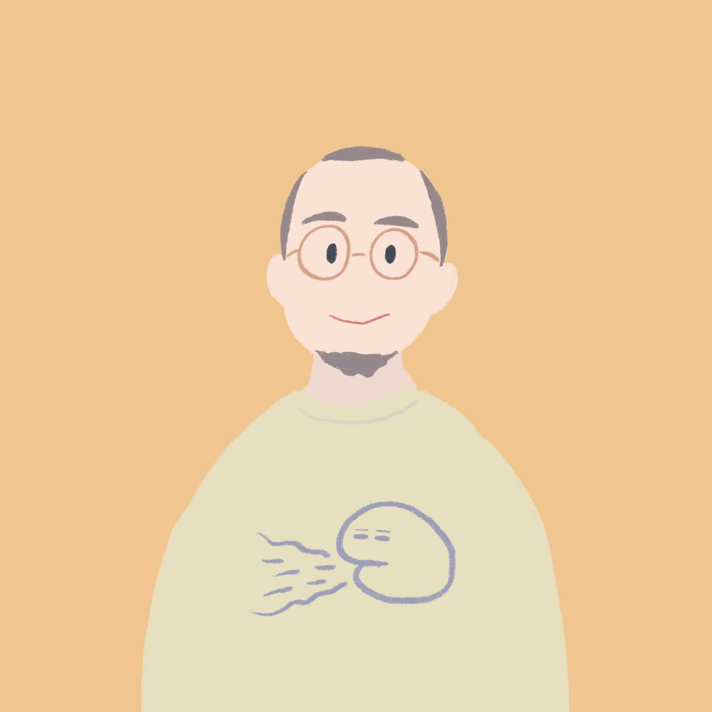

学位：博士(医学)
1983年11月11日生まれ，兵庫県出身
メールフォーム
researchmap
Google
Scholar
Researchgate
1999(平成11)年4月 兵庫県立 八鹿高等学校 入学
2002(平成14)年3月 同上 卒業
2002(平成14)年4月1日 群馬大学 教育学部 教育心理学専攻入学
2006(平成18)年3月23日 同上 (山口陽弘研究室)卒業
2006(平成18)年4月1日 広島大学大学院 教育学研究科
心理学専攻(鈴木伸一研究室) 入学
2008(平成20)年3月23日 同上 (大塚泰正研究室) 修了
2008(平成20)年4月1日 広島大学大学院 医歯薬学総合研究科 創生医科学専攻
先進医療開発科学講座 精神神経医科学教室(山脇成人研究室) 入学
2011(平成23)年3月23日 同上 修了
2006(平成18)年 学士（教育学） 群馬大学（第3947号)
2008(平成20)年 修士（心理学） 広島大学（第25520号）「報酬・罰に対する感受性と抑うつとの関連」
2011(平成23)年 博士（医学） 広島大学（第5540号） 「Modulation of
default-mode network activity by acute tryptophan depletion is
associated with mood change: a resting state functional magnetic
resonance imaging study」
2008(平成20)年7月～2009(平成21)年3月 医療法人社団更正会 草津病院 非常勤心理士
2009(平成21)年4月～2011(平成23)年3月 日本学術振興会 特別研究員(DC1)
2011(平成23)年4月〜2013(平成25)年3月 早稲田大学人間科学学術院 助手(鈴木伸一研究室)
2013(平成25)年4月〜2015(平成27)年3月 専修大学人間科学部心理学科 講師
2011(平成23)年5月〜2016(平成28)年3月 独立行政法人 国立精神・神経医療研究センター 技術研究生
2013(平成25)年5月〜 早稲田大学重点領域研究機構応用脳科学研究所 招聘研究員
2015(平成27)年4月〜 2021(令和3)年3月専修大学人間科学部心理学科 准教授
2019(平成32)年4月〜2020(令和２)年3月 Psychological Methods, Department
of Psychology,University of Amsterdam 訪問研究員
2021(令和3)年4月〜 専修大学人間科学部心理学科 教授
2021(令和3)年〜 国立研究開発法人
国立精神・神経医療研究センター 認知行動療法センター 客員研究員
2008(平成20)年 広島大学医学部 ティーチング・アシスタント （講義：精神科学）
2010(平成22)年 早稲田大学人間科学部通信教育課程 教育コーチ (講義：
産業カウンセリング)
2012(平成24)年 東京都立北多摩看護専門学校 非常勤講師（講義：心理学）
2011(平成23)年〜2012(平成24)年 聖徳大学心理福祉学部心理学科 非常勤講師（講義：神経心理学）
2013(平成25)年 お茶の水女子大学 非常勤講師 （講義：大脳生理学（と心理・行動））
2013(平成25)年〜 2017(平成29)年
早稲田大学人間科学部 非常勤講師（講義：「学習心理学」）
2013(平成25)年〜 2017(平成29)年
早稲田大学大学院人間科学研究科 非常勤講師（講義：「学習心理学特論」）
2014(平成26)年 聖徳大学心理福祉学部心理学科 非常勤講師（講義：神経心理学）
2014(平成26)年〜2016(平成28)年 早稲田大学大学院人間科学研究科 非常勤講師（講義：「臨床心理学研究の最前線」の「医療臨床心理学研究の最前線」担当）
2014(平成26)年〜2017(平成29)年 順天堂大学医学部 非常勤講師（講義：「健康の行動科学」の「行動とは何か」担当）
2016(平成28)年 早稲田大学大学院文学研究科 非常勤講師（講義：「心理学特論2」）
2017(平成29)年 早稲田大学大学院人間科学研究科 非常勤講師（講義：「臨床心理面接法特論II」）
2017(平成29)年 早稲田大学大学院人間科学研究科 非常勤講師（講義：「医療心理学・職場メンタルヘルス学ゼミ(1)A,
(1)B, (2)A, (2)B」）
2015(平成27)年〜2018(平成30)年 北里大学大学院看護学研究科 非常勤講師（講義：「看護研究論演習」）
2018(平成30)年 大阪大学大学院基礎工学研究科 非常勤講師（講義：「データ科学特別講義」）
2020(令和２)年 中央大学大学院文学研究科博士課程後期課程 非常勤講師（講義：心理学特殊講義Ⅰ）
2021(令和３)年
慶應義塾大学大学院社会学研究科 非常勤講師 （(修士)神経科学特論Ⅲ・(博士)神経科学特殊研究Ⅲ サブタイトル：計算論的精神医学入門）
2014(平成26)年・2016(平成28)年・2018（平成30）年・2020(令和２)年・2021(令和３)年・2022（令和４）年・2023（令和5) 東京大学教養学部統合自然科学科 非常勤講師（講義：認知行動障害論）
2023(令和5)年
兵庫教育大学大学院学校教育研究科 非常勤講師（講義：臨床心理統計研究法）